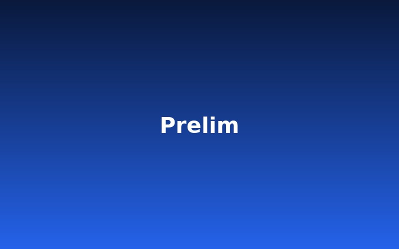
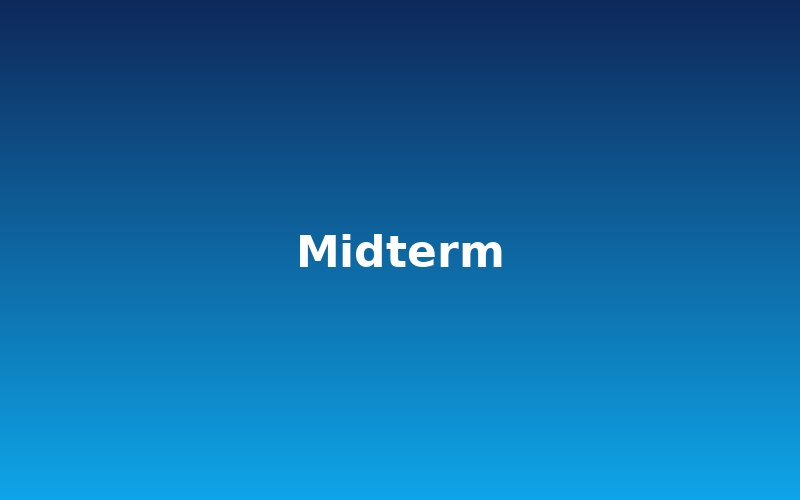
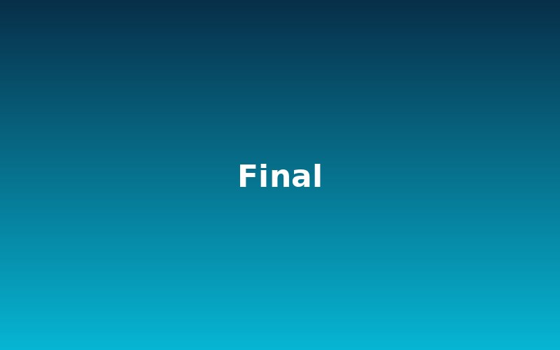

Web Basics
Prelim Activity
My first web page, built with HTML. It covers headings, paragraphs, lists, links, and images.
View ProjectActivities I completed from prelim to final.

My first web page, built with HTML. It covers headings, paragraphs, lists, links, and images.
View Project
A styled, responsive page made with HTML and CSS. It uses colors, spacing, and a clean layout that fits any screen.
View Project
This personal portfolio website. It has five pages, a light/dark theme, a project filter, and a contact form.
View Project